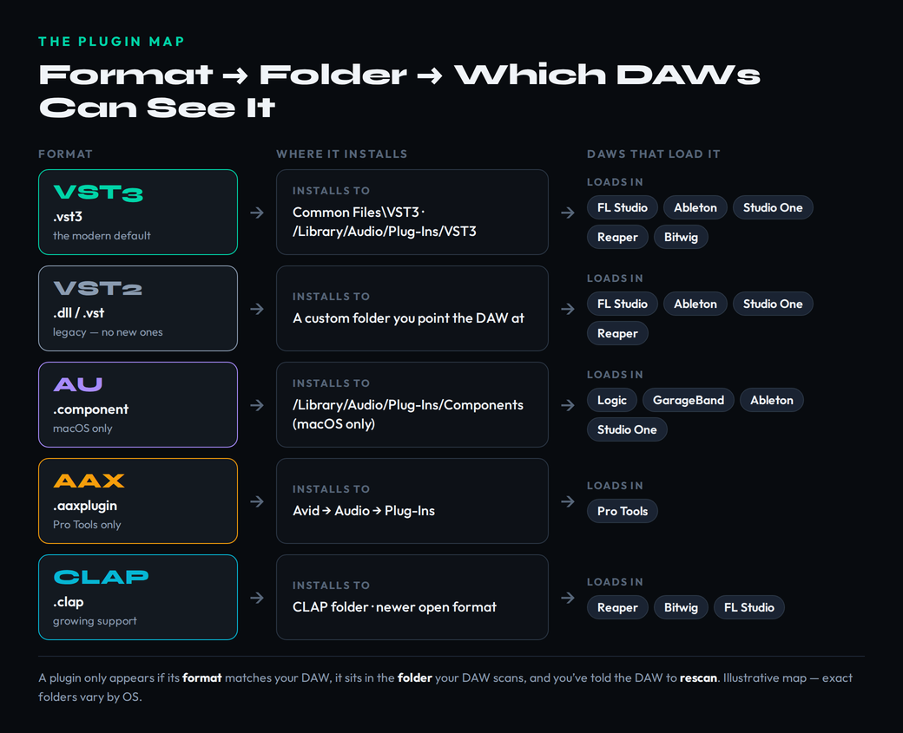
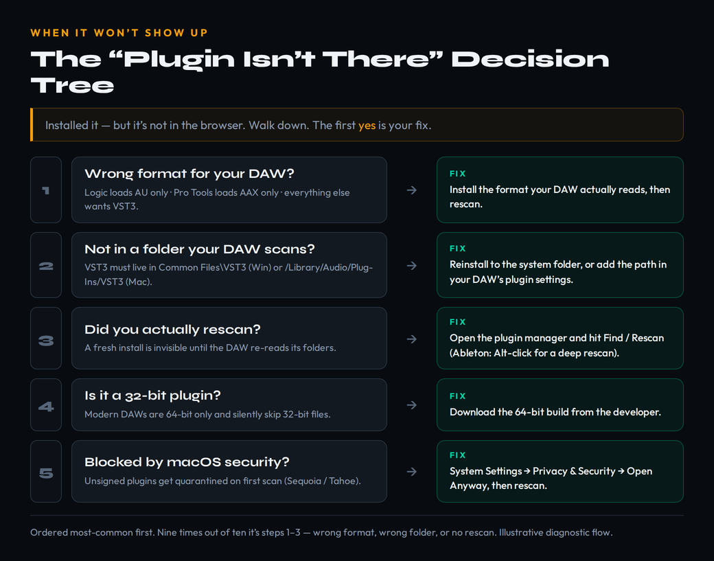
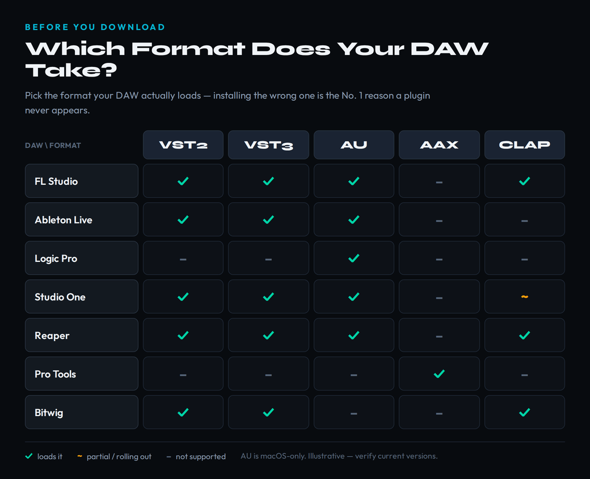

You bought a plugin, ran the installer, opened your DAW — and it isn’t there. No new synth in the browser, no new effect in the list, nothing. This is the single most common wall a new producer hits, and it is almost never a broken download. It is a misunderstanding of how plugins actually get from a website into your project, and once you understand that path, the problem stops being mysterious and becomes a thirty-second fix. Installing a plugin is really three separate things happening in sequence: a file in a particular format lands in a particular folder, and then your DAW scans that folder and decides whether it can read the format. Break any link in that chain and the plugin is installed but invisible. Get all three right and it appears every time.
This guide covers the whole chain for every major DAW — FL Studio, Ableton Live, Logic Pro, Studio One, Reaper, and Pro Tools — on both Windows and macOS. We will start with the mental model that makes the rest obvious, walk the universal install flow, give the exact scan steps per DAW, list where every format lives on disk, and then spend real time on the part you actually came here for: the troubleshooting tree for when a plugin refuses to show up. If you are brand new to all of this, it is worth skimming our music production for beginners primer and our explainer on what a DAW is first, because a plugin only makes sense once you understand the host it plugs into.
Download the plugin, run its installer, and let it install the right format for your DAW (VST3 for most; AU for Logic; AAX for Pro Tools). The installer puts it in the correct system folder automatically. Then open your DAW and rescan — in FL Studio, Settings → Manage plugins → Find installed plugins; in Ableton, Settings → Plug-Ins → Rescan. If it still doesn’t appear, it’s almost always the wrong format, the wrong folder, a missing rescan, a 32-bit file, or a macOS security block — the tree below walks each one.
The Mental Model: Format, Folder, Scan
Almost every “my plugin won’t show up” problem is one of three failures, and they map exactly onto the three stages of how a plugin reaches your DAW. The first stage is format. A plugin is not a single universal file; it is built in one or more competing standards — VST2, VST3, AU, AAX, CLAP — and your DAW can only load the standards it was built to understand. Logic Pro, for instance, ignores VST entirely and only reads Audio Units. Pro Tools reads only AAX. Install the wrong format for your host and the file can sit perfectly on your drive while the DAW acts as if it doesn’t exist, because to that DAW it really doesn’t. If the difference between these formats is fuzzy, our piece on what a VST plugin is and the companion on what a VST3 plugin is lay out the lineage in plain language.
The second stage is folder. Every DAW scans a fixed set of locations on your disk and nowhere else. VST3 is the strictest case: the VST3 specification requires that the format live in one canonical directory — C:\Program Files\Common Files\VST3 on Windows, /Library/Audio/Plug-Ins/VST3 on macOS — and compliant hosts only look there. A reputable installer drops the file in the right place for you, which is exactly why “just reinstall from the official installer” fixes so many folder problems. Trouble starts when you move files by hand, point an installer somewhere custom, or copy a plugin from another machine: the file exists, but not where the DAW is looking.
The third stage is scan. A DAW does not watch your folders in real time. It builds a cached list of plugins when it launches or when you explicitly tell it to rescan, and a plugin you installed five minutes ago is invisible until that list is rebuilt. This is the most common “bug” of all and the least deserving of the name — the plugin is installed correctly, in the right folder, in a format the DAW supports, and it simply hasn’t been re-indexed yet. The diagram below ties the three stages together: each format, where it installs, and which DAWs can load it.

The Five Formats — And Which One You Actually Need
You do not need to memorize the technical differences between plugin formats; you need to know which one your DAW loads so you install that and ignore the rest. VST3 is the modern default and the one you should choose whenever it is offered. It is the actively developed standard — Steinberg, which created VST, re-released the VST3 development kit under a permissive open-source (MIT) license in late 2025, signaling that VST3 is where the format is going to live for the long haul. It installs to a single fixed folder, handles CPU more efficiently than its predecessor, and is supported by every major DAW except Apple’s Logic.
VST2 is the legacy version, the original .dll standard that ran the plugin world for two decades. It still works in hosts that already support it, but it is on the way out: Steinberg stopped issuing new VST2 development licenses back in 2018 and has since pulled the VST2 kit from public availability, so no genuinely new plugin will ship as VST2-only. You will still install VST2 versions of older or free plugins, and that is fine — just prefer the VST3 build when both are offered, and never install both formats of the same plugin into the same project, which only creates duplicate, confusing entries.
AU (Audio Units) is Apple’s format, and it matters for one reason: it is the only format Logic Pro and GarageBand will load. AU is macOS-only and does not exist on Windows at all. AAX is Avid’s format and exists for exactly one host — Pro Tools — which loads nothing else. CLAP is the newcomer, an open standard co-developed by Bitwig and u-he with growing but not universal support: Bitwig and Reaper handle it fully, FL Studio added it in its 2024 release, Studio One support is partial, and Ableton and Logic have not adopted it. CLAP is genuinely promising, especially for modulation-heavy synthesizers, but in 2026 it is still a “nice to have if your DAW reads it,” not a format you go out of your way to install. For the overwhelming majority of producers, the rule is simply: VST3 if you can, AU if you’re on Logic, AAX if you’re on Pro Tools.
The behind-the-scenes link between a plugin’s format and its latency is real but rarely visible — if you want the deeper mechanics of how hosts compensate for plugin delay, the Bible entry on plugin delay compensation explains it, and the broader plugin entry covers the concept from the ground up.
The Universal Install Flow
Every plugin installation, regardless of brand or format, follows the same five steps. Internalize this sequence and you will rarely need a per-plugin tutorial again. First, download the correct installer from the developer’s own website. Always go to the source — the actual maker’s site or your account on a storefront like Plugin Boutique — never a third-party mirror or a torrent, which is how the overwhelming majority of malware reaches producer machines. Make sure you grab the build for your operating system: a Windows .exe will not run on a Mac, and a macOS .pkg will not run on Windows.
Second, run the installer. On Windows, if the installer needs to write to the protected system plugin folders, right-click it and choose “Run as administrator” so it has permission. On macOS, you will double-click the .pkg and follow the prompts; if macOS blocks it as coming from an unidentified developer, hold that thought — the security section below covers it. Third, choose your formats. Most installers present checkboxes for VST3, VST2, AU, AAX, and sometimes CLAP. Tick the format your DAW reads and feel free to leave the others unchecked; installing formats you will never load just clutters your plugin list and lengthens every future scan.
Fourth, let the installer place the files. For VST3 and AU this is non-negotiable and automatic — the file goes to its one legal system folder. For VST2, the installer will usually ask which folder you want, and you should pick a single dedicated VST2 folder and remember it, because you will need to point your DAW at that exact path later. Fifth, open your DAW and rescan. This final step is the one beginners skip, and it is why a perfectly installed plugin seems missing. With the file in place, you simply tell the host to re-read its folders, which is what the next section covers DAW by DAW. The five steps above are also encoded as the structured how-to on this page so search engines can surface them directly.
Copying plugin files from an old computer to a new one instead of reinstalling. Many plugins — especially VST3 instruments — install support content (presets, wavetables, sample libraries, license files) into other system folders. Copy only the plugin file and it will either fail to scan or crash on load. Always reinstall from the official installer on a new machine.
Scanning Plugins in Every Major DAW
The install flow is universal; the rescan step is where each DAW differs. Below is the exact path for the six most common hosts. The wording moves slightly between versions, but the location of the control is stable, so even if a menu label has shifted in your build, you will find the rescan within a click or two of where it’s described.
FL Studio. Open Settings (the F10 key), go to the File tab, and click “Manage plugins” to open the Plugin Manager. Confirm that your VST3 folder appears in the “Plugin search paths” list on the left — you can add a custom VST2 path here with the folder icons — then click “Find installed plugins” to run the scan. If a plugin crashes the scan, enable “Bridged” mode for it under the plugin’s Wrapper Settings to run it in a separate process. New to FL specifically? Our FL Studio for beginners walkthrough covers the wider workflow around this.
Ableton Live. Open Settings (Cmd/Ctrl+comma) and click the Plug-Ins tab. Turn on “Use VST3 Plug-In System Folder” and, on a Mac, “Use Audio Units”; if you keep VST2 plugins somewhere custom, switch on “Use VST Plug-In Custom Folder” and Browse to that path. Click Rescan. If a plugin is stubborn, hold Alt/Option while clicking Rescan to force a deep rescan of everything. Live 12 also shows any plugins it had to block after a crash right there in the Plug-Ins preferences. The Ableton Live beginners guide has the rest of the orientation.
Logic Pro. Logic only loads Audio Units, and it validates every AU on launch — a plugin that fails validation will not appear. To force a re-check, open the Plug-In Manager (Logic Pro → Settings, or from the Plug-in menu), find the plugin, and use “Reset & Rescan Selection.” If an AU consistently fails validation, update it to its latest version, because the cause is almost always an outdated build that predates your macOS. The Logic Pro beginners guide covers Logic’s AU-only world in more depth.
Studio One. Studio One reads VST2, VST3, and (on macOS) AU. Open Studio One → Settings/Preferences → Locations → VST Plug-Ins to confirm or add a folder, then use the Reset Blocklist and rescan controls so a previously failed plugin gets another chance. It scans on launch as well, so a restart often does the job on its own. Reaper. Reaper is the permissive one — it ignores the VST3 single-folder rule and will scan any path you give it. Go to Options → Preferences → Plug-ins → VST, add your folder to the VST plug-in paths, and click “Re-scan” (or “Clear cache and re-scan” if a plugin is misbehaving). Reaper also reads CLAP and, on macOS, AU.
Pro Tools. Pro Tools is the simplest and the strictest: it loads AAX and nothing else — no VST, no VST3, no AU. AAX plugins install to Avid’s own plugin directory automatically, and Pro Tools rescans on launch, so the “install the right format” rule does almost all the work here. If an AAX plugin is missing, the cause is nearly always an iLok authorization problem rather than a folder or scan problem, so check your license first.
Where Plugins Live: The Folder Reference
When you need to verify by hand that a file landed where it should — or point a DAW at a custom location — this is the map. These are the default system folders each format uses; user-level equivalents exist under your home ~/Library on macOS for the rare installer that uses them.
| Format | Windows | macOS |
|---|---|---|
| VST3 | C:\Program Files\Common Files\VST3 | /Library/Audio/Plug-Ins/VST3 |
| VST2 | A custom folder (e.g. C:\Program Files\VSTPlugins) | /Library/Audio/Plug-Ins/VST |
| AU | — (not supported) | /Library/Audio/Plug-Ins/Components |
| AAX | C:\Program Files\Common Files\Avid\Audio\Plug-Ins | /Library/Application Support/Avid/Audio/Plug-Ins |
The two things to remember from this table: VST3 has exactly one legal home, so if a VST3 plugin is missing, checking that folder for the .vst3 file is the fastest possible diagnosis. And VST2 and VST3 must always live in separate, dedicated folders — never point both at the same path. Once a plugin is correctly placed and scanned, the fun part begins: building it into a signal chain. Our guide to how to build a plugin chain is the natural next step once everything is loading.
When It Still Won’t Show Up: The Troubleshooting Tree
This is the section you came for. A plugin that refuses to appear feels random, but it almost never is — it fails for one of five reasons, and they have a natural order of likelihood. Work down the list and stop at the first one that applies; that is your fix. The decision tree below is the same logic in visual form.

Cause one: wrong format for your DAW. This is the most common failure of all and the easiest to overlook, because the installer happily finished and the file is sitting on your disk — it’s just a format your host can’t read. If you’re on Logic and installed only the VST3, Logic will never see it; you need the AU build. If you’re on Pro Tools, you need AAX. Re-run the installer, tick the format your DAW actually loads (check the compatibility grid further down if you’re unsure), and rescan.
Cause two: it’s not in a folder your DAW scans. If the format is right but the plugin still doesn’t appear, confirm the file is actually in the correct system folder using the table above. This is where hand-copied files and installers pointed at a custom directory go wrong. The cleanest fix is to uninstall and reinstall from the official installer, letting it choose the default location; for VST2, add your custom folder to the DAW’s plugin paths so it knows where to look. Cause three: you didn’t rescan. If the format and folder are both correct, you almost certainly just need to rebuild the plugin list. Open your DAW’s plugin manager and run Find/Rescan (Alt-click Rescan in Ableton for a deep pass), or simply restart the DAW, which forces a fresh scan on launch.
Cause four: it’s a 32-bit plugin. Every current DAW is 64-bit only and will silently skip 32-bit plugin files during scanning — no error, just absence. If a very old free plugin won’t appear no matter what, check whether a 64-bit version exists and install that; if only a 32-bit build was ever made, the plugin is effectively dead on modern systems without a third-party bridge. Cause five: macOS security blocked it. On recent macOS (Sequoia and Tahoe), an unsigned or un-notarized plugin gets quarantined the first time the DAW tries to scan it, and Apple removed the old Control-click shortcut to bypass this. The current path is: try to load it, dismiss the warning, then go to System Settings → Privacy & Security, scroll to the Security section, and click “Open Anyway” next to the blocked item — then rescan. Only do this for plugins you downloaded from a source you trust.
Choosing What to Install — And Keeping It Clean
Knowing how to install plugins is the moment most producers start installing far too many of them, and a bloated, half-broken plugin folder is its own kind of problem: slower scans, longer load times, and a browser so crowded you can’t find the three tools you actually use. Treat installation as a deliberate act, not a reflex. When a plugin offers a free demo, use it before you buy — most paid plugins run in demo mode with periodic silence or saved-project limits, which is plenty to decide whether it earns a place in your setup. And lean on the free tier first: the gap between free and paid has narrowed enormously, and our roundups of the best free VST plugins and the best plugins for beginners will get a new producer a complete, capable toolkit without spending a cent. If you specifically want stock-replacement instruments and effects, the best VST plugins for beginners list is the place to start.
Compatibility is the other half of hygiene — checking that a plugin fits your setup before you download spares you the entire troubleshooting tree above. The grid below maps which formats each major DAW accepts; match a plugin’s available formats against your host before you install, and you’ll never install a file your DAW can’t read.

Finally, mind your machine’s headroom. Every plugin you load costs CPU, and an instrument-heavy project can stutter long before you’ve run out of ideas. Choosing efficient tools from the start matters more than most beginners expect — our guide to the best CPU-friendly plugins is worth reading before you fill a project with the heaviest synths you can find, and the best plugins for mixing roundup points you at the efficient workhorses that do the most for the least overhead. Install with intention, keep the folder lean, and the tools stay an asset instead of becoming a maintenance burden.
Put It Into Practice: 3 Drills
- Pick one free synth from our free plugins roundup and download the installer for your operating system from the developer’s own site.
- Run it, tick only the format your DAW reads (VST3 for most, AU for Logic), and let it install to the default folder.
- Open your DAW, run a rescan, and load the synth on a new track. If it appears first try, you understood the chain.
- Create a dedicated VST2 folder somewhere memorable and install one VST2 plugin into it deliberately.
- In your DAW’s plugin settings, add that folder to the scan paths — the custom VST folder in Ableton, a search path in FL Studio or Reaper.
- Rescan and confirm it appears. You now control where your DAW looks, not just what it finds by default.
- Take a plugin that currently works and move its file out of the scanned folder, then rescan and watch it disappear.
- Without reinstalling, work the troubleshooting tree: identify that it’s a folder problem, return the file to its correct location.
- Rescan and confirm it returns. Practicing the failure makes the real one trivial. Then load a synth and explore it with our synthesis type selector.
Frequently Asked Questions
VST3 plugins install to one fixed system folder: C:\Program Files\Common Files\VST3 on Windows and /Library/Audio/Plug-Ins/VST3 on macOS. VST2 plugins go to a custom folder you choose during installation and then point your DAW at. AU plugins (macOS only) install to /Library/Audio/Plug-Ins/Components. A good installer places the file in the right folder automatically.
It’s one of five things: you installed the wrong format for your DAW, the file isn’t in a folder your DAW scans, you haven’t rescanned since installing, it’s a 32-bit plugin on a 64-bit DAW, or macOS security blocked it. Work those in order — the first three account for the vast majority of cases, and a rescan or reinstall from the official installer fixes most of them.
Install VST3 whenever it’s offered. It’s the modern, actively developed standard, handles CPU more efficiently, and installs to a single predictable folder. VST2 still works in hosts that support it and you’ll use it for older or free plugins, but no new plugins ship as VST2-only anymore. Don’t install both formats of the same plugin into one project — pick one to avoid duplicate entries.
Open Settings (F10), go to the File tab, and click “Manage plugins.” In the Plugin Manager, confirm your VST3 folder is listed under Plugin search paths, then click “Find installed plugins” to rescan. If a plugin crashes the scan, switch it to Bridged mode in its Wrapper Settings. Make sure you installed the 64-bit version, since FL Studio is a 64-bit application.
Logic Pro does not load VST or VST3 at all — it only reads Audio Units (AU). Re-run the plugin’s installer and tick the AU format. If you have the AU but it still doesn’t appear, it likely failed Logic’s validation on launch; update the plugin to its latest version and use Reset & Rescan Selection in Logic’s Plug-In Manager.
On Sequoia and Tahoe, unsigned plugins get blocked on first scan and the old right-click bypass no longer works. Try to load it, dismiss the warning, then open System Settings → Privacy & Security, scroll to the Security section, and click “Open Anyway” next to the blocked plugin. Rescan afterward. Only do this for plugins from sources you trust.
No. Installing both formats of the same plugin just creates duplicate entries in your browser and can cause confusion when sharing projects. Install one format — VST3 by default — and use it consistently. The only reason to keep both is if you use a plugin across different apps that don’t all support VST3.
Only install from the developer’s official website or a reputable storefront. Cracked or pirated plugins are one of the most common malware vectors for music producers, and a free plugin from an unknown mirror isn’t worth the risk to your projects and system. When in doubt, buy from a trusted retailer or stick to the well-known free plugins recommended by sources you trust.